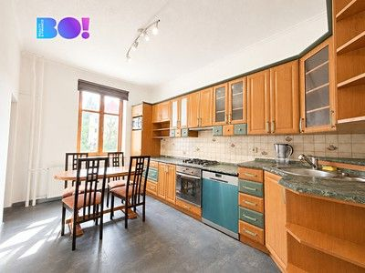
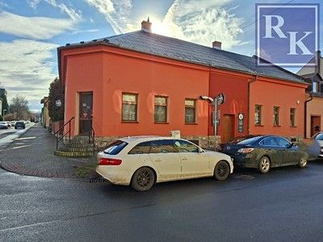
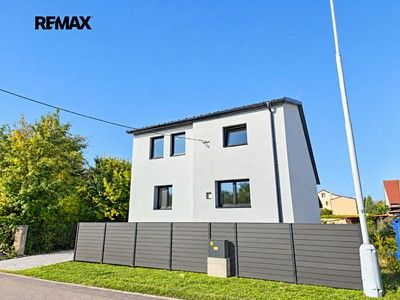
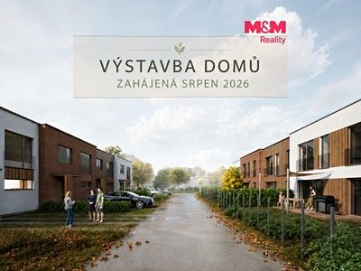
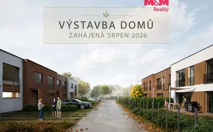
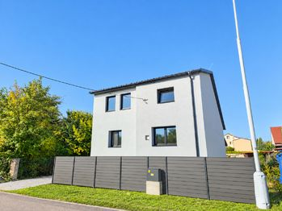
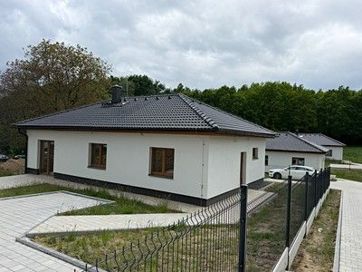
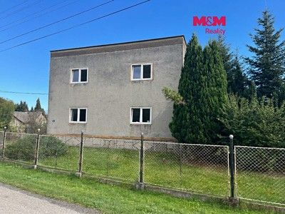
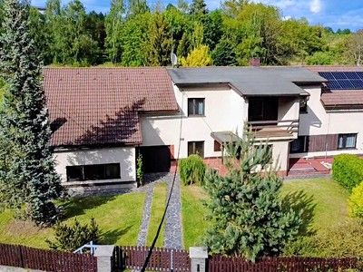

First observed since comparable Sreality scan
Prodej rodinného domu 155 m², pozemek 370 m²
Muglinov, Ostrava-město
Not stated → 4,000,000 CZK
Original advert ↗Daily market update · 2026-11-05 · Ostrava + 15 km
Data limitation: Prices are advertised, not completed transaction prices. Disappeared adverts are NOT proof of sold or rented status. Search radius may be unverified for individual locations. "New" means first observed since a comparable complete Sreality scan, not independently verified as newly published. "New to tracker" may reflect expanded or partial portal coverage. Older Sreality IDs and known cross-lists are excluded. Additional monthly rental charges are not reliably supplied in these search cards.

Muglinov, Ostrava-město
Not stated → 4,000,000 CZK
Original advert ↗
Místek, Frýdek-Místek
12,350,000 CZK → 12,350,000 CZK
Original advert ↗
Kunčičky, Ostrava-město
Not stated → 10,890,000 CZK
Original advert ↗
Petřvald, Karviná
6,100,000 CZK → 6,100,000 CZK
Original advert ↗
Kunčičky, Ostrava-město
Not stated → 9,450,000 CZK
Original advert ↗
Nové prodej domu 107 m² s pozemkem 274 m² Ostrava - Kunčičky 9 450 000 Kč
Not stated → 9,450,000 CZK
Original advert ↗Prodej domu/vily, 155 m²
Not stated → 4,000,000 CZK
Original advert ↗
rava (ID 364-NP00068) ulice Třebízského, Ostrava – městská část Slezská Ostrava 10 890 000 Kč ( za nemovitost)
Not stated → 10,890,000 CZK
Original advert ↗
Hrabová, Ostrava-město
8,990,000 CZK → Not stated
Original advert ↗
Rychvald, Karviná
4,850,000 CZK → Not stated
Original advert ↗
Kunčičky, Ostrava-město
11,750,000 CZK → Not stated
Original advert ↗
Rychvald, Karviná
5,900,000 CZK → Not stated
Original advert ↗
Stará Ves, Nový Jičín
5,590,000 CZK → Not stated
Original advert ↗Brušperk, Frýdek-Místek
6,490,000 CZK → Not stated
Original advert ↗